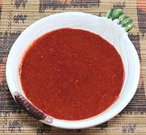

|
Awaze Dipping SauceEast Africa: Ethiopia - Awaze | ||||
| Makes: Effort: Sched: DoAhead: |
3 oz * 5 min Yes |
A dip used mainly for meats, but sometimes vegetarian dishes. It's made in endless versions - these draw from those of Yohanis Gebreyesus. | |||
|
1/3 1/4 1/2 1/3 1/4 1/4 1/2 1/3 1/4 1/2 |
c c t c t c t c c t |
Recipe #1 Tej / Mead (1) Berbere Spice (2) Olive Oil Recipe #2 Wine, White (3) Honey Berbere Spice Olive Oil Recipe #3 Arak (4) Berbere Spice Olive Oil |
Make - (5 min)
|